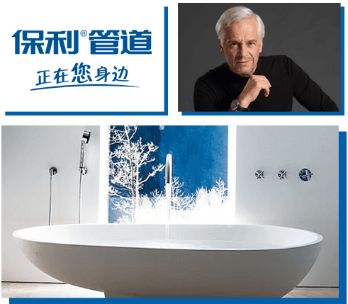
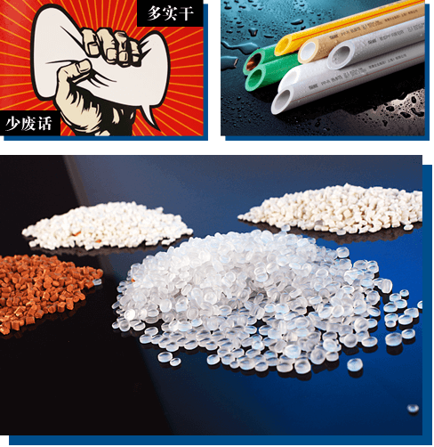
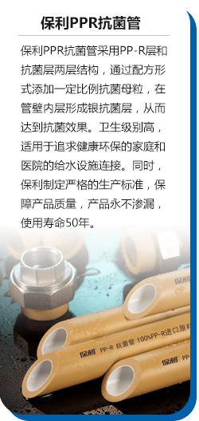
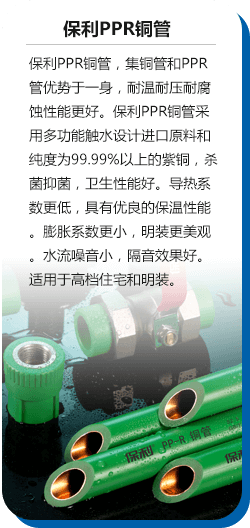
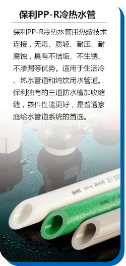
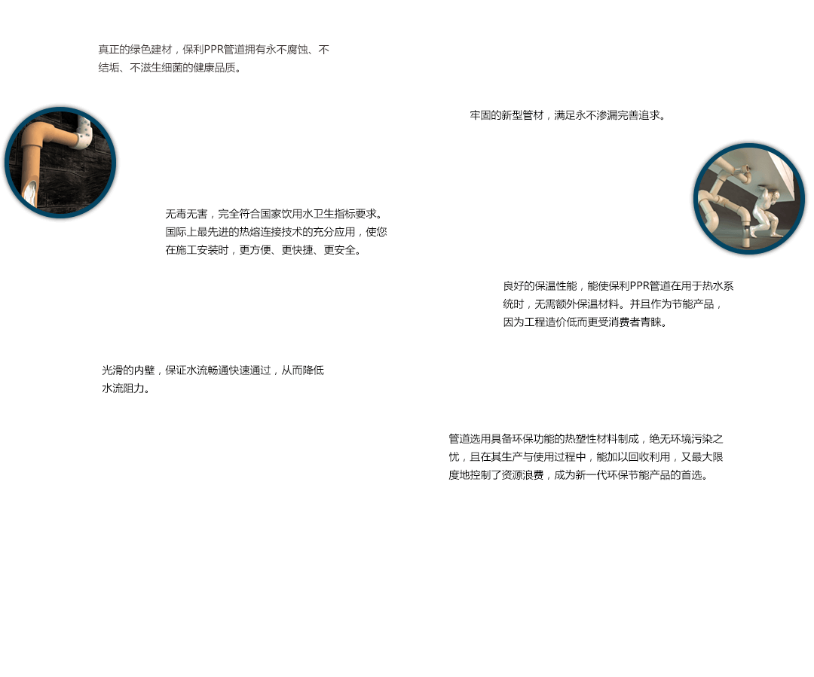

保利管道源自美国内达华州，是专业致力于塑料管道的研发、生产和销售的全球知名塑料管道品牌。
许多消费者可能一头雾水：我们不是在说爱康吗，怎么扯到了保利？其实，这一点都不“扯淡”，就像飘柔、伊卡璐、沙宣、海飞丝等这些大家以为的“竞争对手”都属于宝洁公司一样，保利和爱康人家其实是一家人来着。
早在2005年，爱康企业集团就成功收购美国管道品牌“POLYGON”，保利正式成为爱康企业集团旗下品牌之一，并由“POLYGON”正式音译成为中文“保利”。
许在此之后爱康率先斥巨资引进国际上最先进的德国技术和管材全电脑控制生产线，致力于技术创新，现已发展成为集给排水、暖通、地源热泵、同层排水、虹吸雨水、市政工程等领域的管道专家，实现了自己在中国的华丽转身。

爱康一直是“实干派”，爱康人信奉的一直是“说的再多不如做得多”“说到不如做到”。
焦点访谈曾揭露了曝光了江苏吴江七都镇一些塑管生产企业用废料制造劣质给水管道的发指行为。七都镇有上百家管道生产企业，节目组随机走访了其中十几家。除了一家以外，其他家都在公开用回料生产自来水管。追溯回料的来源，镜头下展现的事实更令人震撼，除了废塑管，还包括废旧电缆、装载过化工原料的塑料桶、甚至医疗垃圾。
而每个爱康人都可以拍着胸脯保证，这样的事从未在爱康发生，保利对待产品品质一直有“豹子”般专注而坚定的精神，无论市场情况如何，初心不变。
爱康用心承诺，保利管道从原料的选用、产品的加工、储存和安装等每一环节都充分关注有关卫生性能方面的因素，经上海市预防医学研究究检测，其所用的原料管材/管件产品均达GB/T17219：《生活饮用水输配水设备及防护材料的安全性评价标准》的要求。

从一个人做的事看透这个人，一个企业做的产品可以透析这个企业。保利的产品一切从消费者的生活出发，从消费者的需求出发。
中国各地气候不同，管道面对的压力、温度、腐蚀因素也不同。而且随着中国环境问题也来越严重，很多地区都成了“饮用水”困难户，不是没有水，而是水质堪忧。这对这些状况，爱康推出了保利PP-R管。



PP-R管给水管道系统可以广泛应用于各种家庭，具有无毒、质轻、耐压、耐腐蚀等特性，不仅适用于生活冷、热水管道，也适用于纯饮用水管道，被称为永不结垢、永不生锈、永不渗漏的绿色给水管道。

